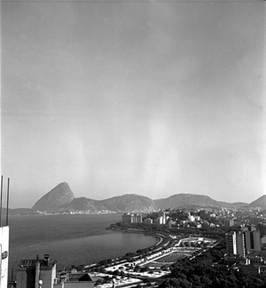
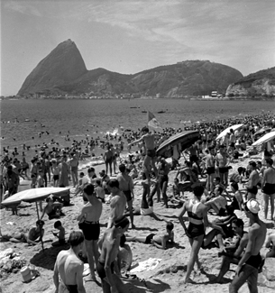

Rio Antigo
Sobre o Rio Antigo
Nesta página são apresentadas algumas imagens do Rio antigo na década de 40.
As fotos são de Pierre Verger, o fotógrafo
francês que se apaixonou pela Bahia e mudou para o Brasil para estudar os ritos afro-brasileiros.
Ele
esteve em São Paulo e no Rio de Janeiro nos anos 40 e em várias outras ocasiões, quando tirou as fotos
que expostas nesta página.
| Fotos do Rio Antigo | ||
|---|---|---|
FlamengoEsta foto representa a Praia do Flamengo em 1940 
|
Aterro do FlamengoEsta foto representa o Aterro do Flamengo em 1940/41

|
CopacabanaEsta foto representa a Praia de Copacabana em 1940

|